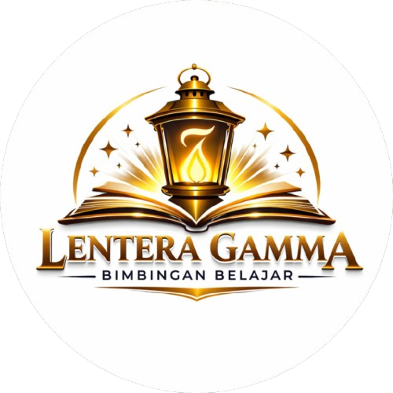

FOR ELEMENTARY STUDENTS
*Ketik menggunakan huruf kapital
Pelajari materi Numerasi dan Literasi secara ringkas dan mudah dipahami.
Uji kemampuan akademis Anda melalui simulasi ujian berstandar HOTS.
1. Elemen Bilangan: Operasi hitung bilangan bulat & cacah, KPK/FPB, Pecahan (senilai, desimal), Persen & Rasio.
2. Elemen Geometri: Sifat, keliling, luas bangun datar. Bangun ruang (jaring-jaring, volume, luas permukaan). Pengukuran baku.
3. Elemen Data: Interpretasi tabel, diagram batang/gambar. Rata-rata, median, modus.
1. Teks Nonfiksi: Informasi tersurat/tersirat, gagasan pokok, kosakata, urutan kejadian.
2. Teks Fiksi: Unsur intrinsik (tokoh, latar, alur, pesan moral), gaya bahasa & puisi.
3. Literasi Fungsional & Evaluasi: Pengumuman, iklan, petunjuk arah. Kesesuaian ilustrasi teks, refleksi.
Nama Siswa
Nilai Anda
0
Predikat
-
Ketuntasan
LULUS